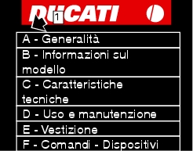
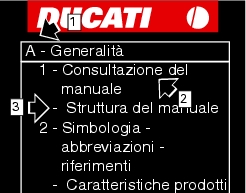

1 -
How to use this manual
This manual has been prepared for technical personnel at Ducati Authorized Service Centres with the aim of providing
fundamental information on how to work in accordance with the modern concepts of “best practice” and “safety in the workplace” during the maintenance, repair or replacement of original components of the cycle parts and engine of this motorcycle.
All operations described in this manual must be carried out by experienced, skilled technicians, who are required to follow the
Manufacturer's instructions in full.
Some information has been intentionally omitted, as we believe that all specialized technicians should have a basic technical
background. Additional information on how to install various components is provided in the parts catalogue.
Important
This manual also describes the essential checks to be carried out prior to delivery of the motorcycle.
Ducati Motor Holding S.p.A. declines all liability for any technical errors or omissions in this manual and reserves the right to make
changes made necessary by the technical evolution of its products without prior notice.
The information contained herein was correct at the time of going to press.
Important
Reproduction or disclosure of all or part of the contents of this manual is strictly forbidden. All rights on this manual are reserved
for Ducati Motor Holding S.p.A. Applications for authorization for reproduction must be submitted in writing and must specify the reasons for such reproduction.
Ducati Motor Holding S.p.A.
Layout of the manual
This manual is divided into sections (1), each identified by a letter.

Each section (1) is made up of several chapters (2), which are numbered consecutively.
The chapters (2) may be further subdivided into paragraphs (3).

The manual describes all repair operations starting from the fully assembled motorcycle.
The full procedure is described up to the point in which the motorcycle is restored to its fully assembled starting condition.
Important
Some of the sections of this manual are not present, since the motorcycle in question is not equipped with the relevant parts.
Important
The layout of the manual is designed in such a way as to be applicable to all the different models manufactured by Ducati Motor
Holding.
To facilitate consultation of the manual, the table of contents is identical for all motorcycle models.